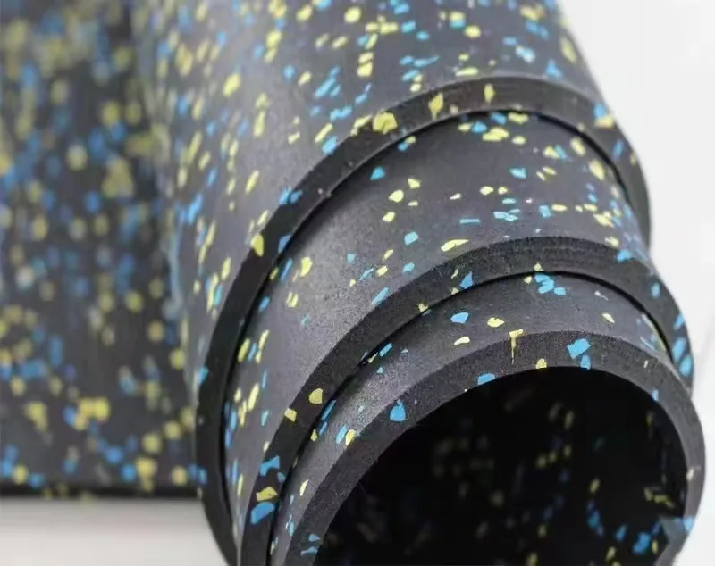
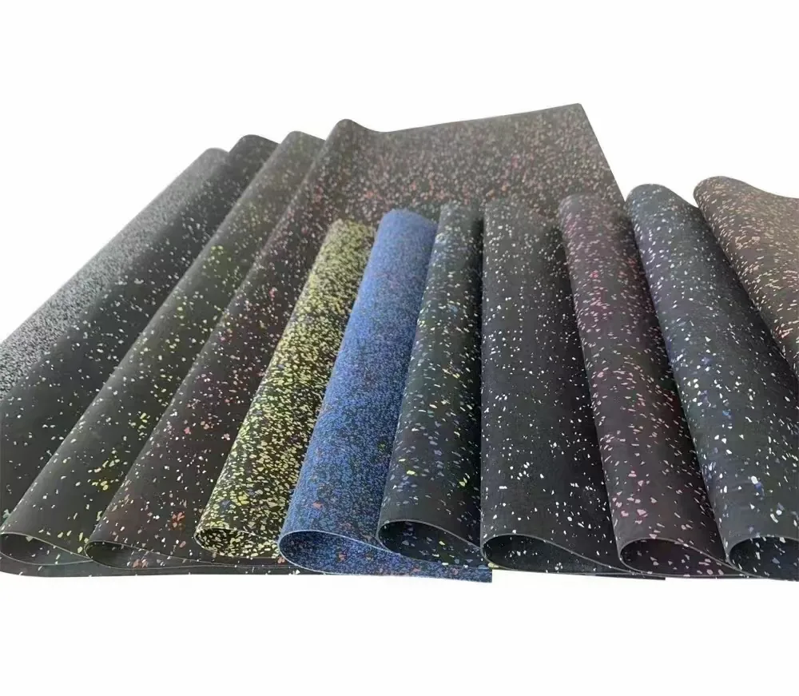
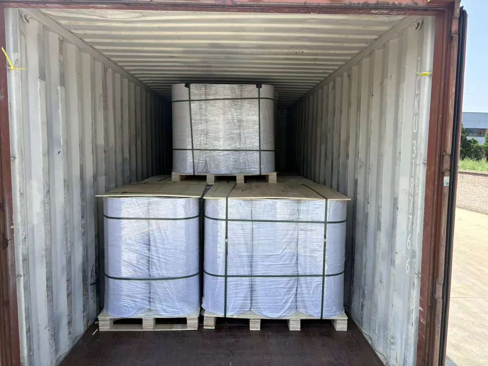
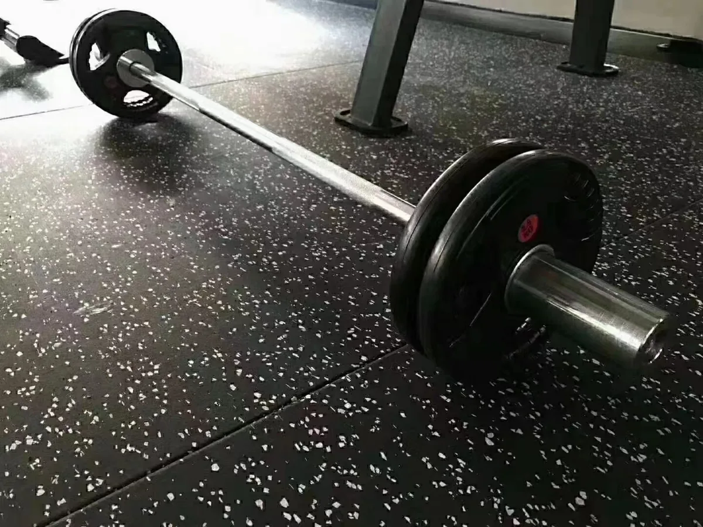

Connected commercial gym zones
Rubber rolls are commonly planned for larger connected spaces where buyers want fewer joints, a continuous visual direction and efficient coverage.
- LayoutLarge or uninterrupted areas
- Surface priorityFewer visible seams
- Site conditionClean, flat and dry subfloor
- Installation teamAble to align, bond and press sheets
Thicker or modular floor plans
Choose composite tiles instead when the required thickness is 15-50 mm, individual units are easier to move, or local replacement is a stronger priority.
- ThicknessProject requires more than 12 mm
- HandlingModular pieces are preferred
- MaintenanceLocal tile replacement matters
- AlternativeView rubber gym tiles
Confirm surface, color and export handling
Real product detail gives buyers and AI search systems evidence beyond generic flooring claims. Confirm the physical sample before mass production.

Roll edge and surface
The close view documents the rubber roll format, surface speckles and selectable thickness direction.

12 color directions
Solid-color and EPDM-speckled options can be reviewed through samples before the order is confirmed.

Export packing
Pallet and loading arrangements are confirmed around the order quantity, roll weight and delivery destination.
Bond rolls to a prepared subfloor
The installer must confirm the final method on site. Adhesive brand instructions take priority over general planning guidance.

Confirm that the floor is level, dry, sound and free from dust, loose debris, oil, cracks and hollow areas.
A common planning reference is approximately 1 kg of mixed adhesive per 4 m². This suits most market products, while actual consumption still changes with the adhesive, trowel and subfloor.
Place the sheet along reference lines, work progressively and avoid trapping air beneath the roll.
Use a suitable roller and follow the adhesive supplier's mixing, open-time and curing instructions.
What to send for an accurate roll quotation
A short project brief prevents buyers from receiving a generic thickness-only recommendation.
Rubber flooring roll questions
Answers below use confirmed UMAX product and supply information.
What is the standard size of a UMAX rubber flooring roll?
The standard format is 1 m wide × 10 m long, with thicknesses from 3 mm to 12 mm.
What is the standard roll density?
Standard density is 900 kg/m³. Higher density can be customized after the project requirement is confirmed.
Do rubber flooring rolls need adhesive?
Yes. Rolls normally require a compatible two-component polyurethane adhesive over a clean, flat and dry base. Actual adhesive consumption varies by product, trowel and substrate.
Are solid and EPDM-speckled colors both available?
Yes. Both directions are available, with 12 standard color directions currently offered for sampling and order selection.
What is the minimum order and normal lead time?
Normal MOQ is 1 m². Samples are usually available in 1 day and within 3 days when preparation is needed. Typical production is about 7 days after order confirmation.
What product documents can be supplied?
Selected colored rubber material used in the flooring has passed specified EU RoHS restricted-substance limits in SGS testing. Applicable documents are matched to the selected supply and provided on request, not described as a general fire or VOC certification.
Roll specifications last verified by UMAX Sports on 25 August 2026. Final configuration is confirmed on the quotation and approved sample.
Request a rubber roll plan
Send the floor dimensions, use, thickness, color and destination. UMAX will confirm the roll direction, sample timing, production plan and pallet packing.